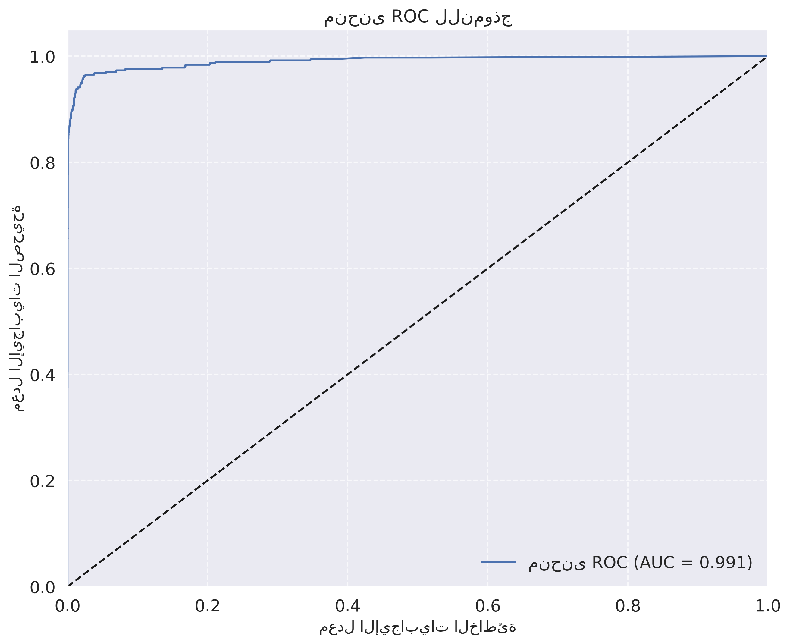
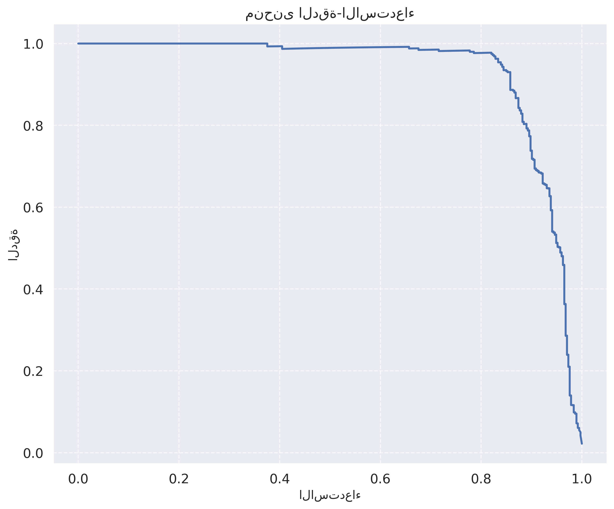
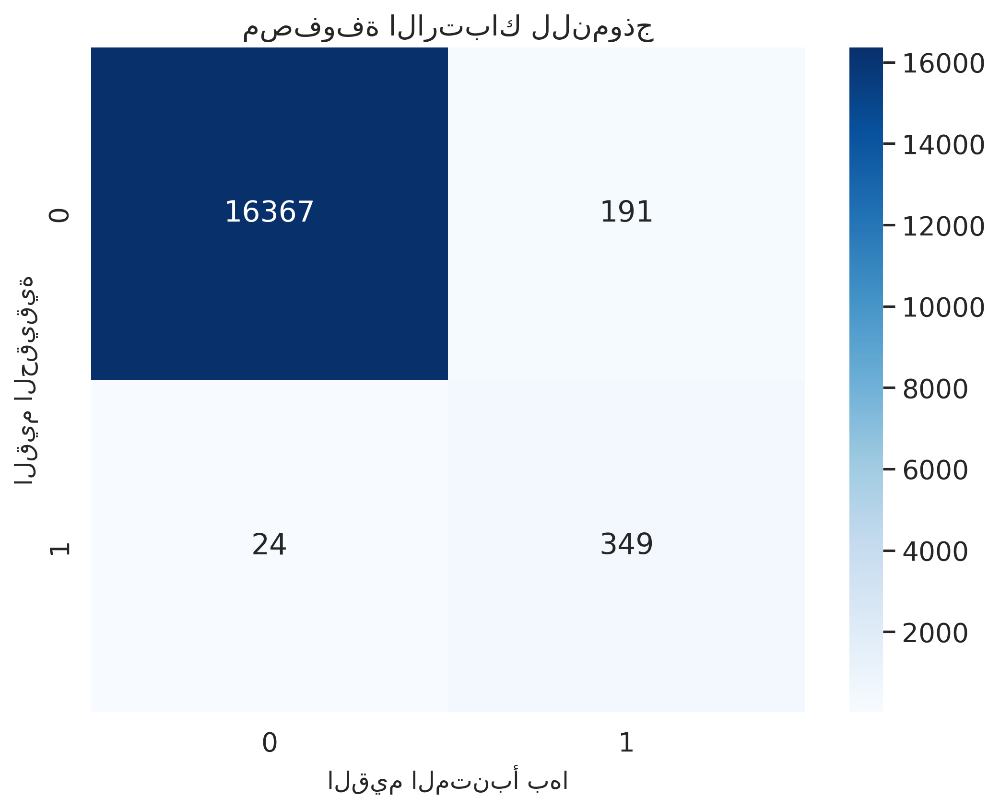
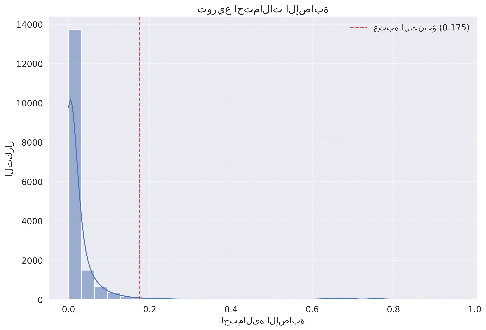
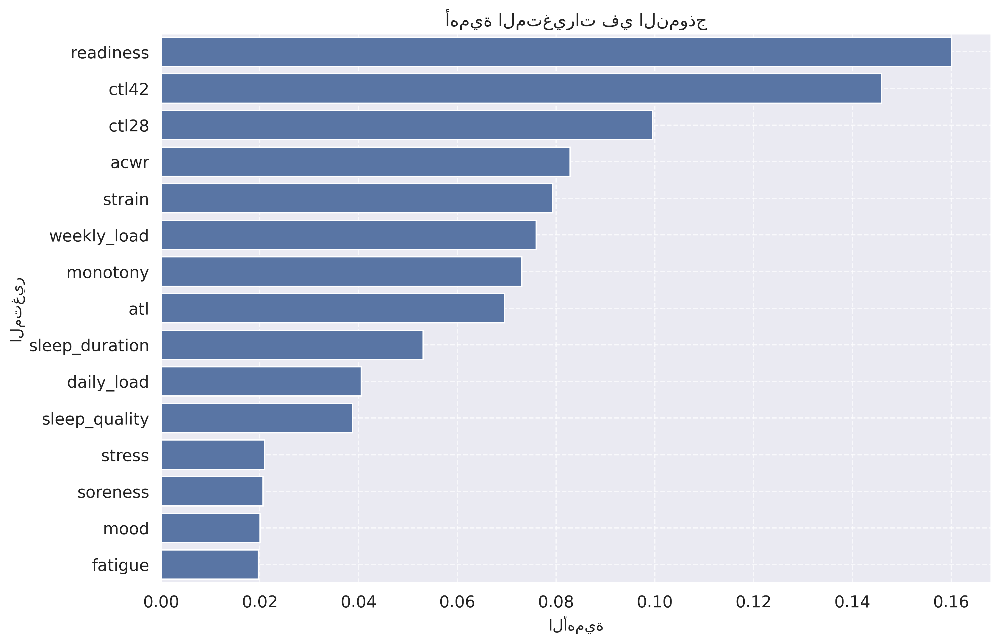
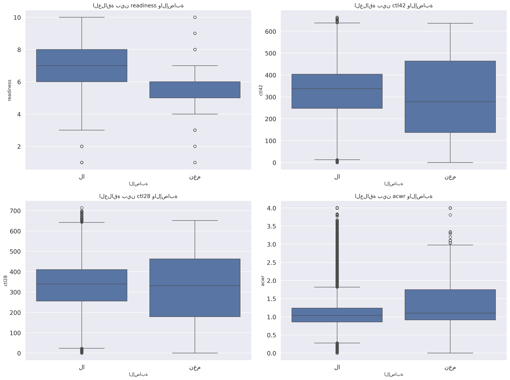
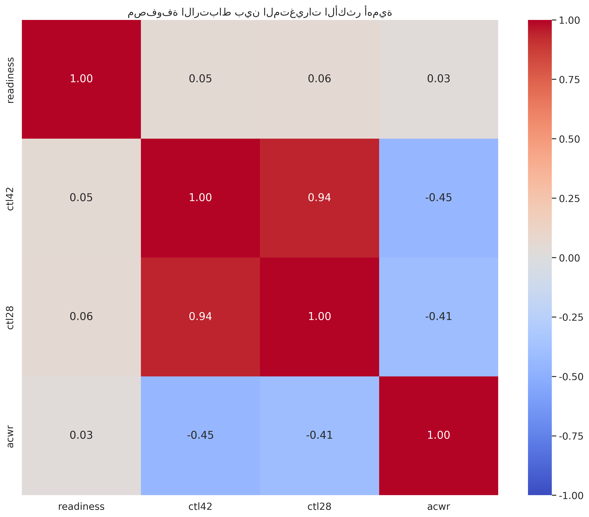

لوحة تحكم VisionGuard - نتائج تحليل البيانات والنموذج التنبؤي
تحليل شامل لبيانات اللاعبين ونموذج التنبؤ بالإصابات الرياضية
مقاييس أداء النموذج
الدقة
98.7%
Accuracy
الضبط
64.6%
Precision
الاستدعاء
93.6%
Recall
مقياس F1
76.5%
F1 Score
مساحة تحت منحنى ROC
99.1%
AUC
منحنيات تقييم النموذج
منحنى ROC

منحنى الدقة-الاستدعاء

مصفوفة الارتباك

توزيع احتمالات الإصابة

أهمية المتغيرات في التنبؤ بالإصابات
أهمية المتغيرات في النموذج

المتغير
الأهمية
التمثيل البصري
readiness (الجاهزية)
16.01%
ctl42 (الحمل المزمن 42 يوم)
14.59%
ctl28 (الحمل المزمن 28 يوم)
9.96%
acwr (نسبة الحمل الحاد:المزمن)
8.28%
strain (الإجهاد)
7.94%
تحليل العلاقات بين المتغيرات والإصابات
العلاقة بين المتغيرات الأكثر أهمية والإصابات

مصفوفة الارتباط بين المتغيرات الأكثر أهمية

الاستنتاجات والتوصيات
النتائج الرئيسية:
تم بناء نموذج تنبؤي للإصابات باستخدام بيانات الحالة الصحية وحمل التدريب بدقة عالية تصل إلى 98.7%.
المتغيرات الأكثر أهمية في التنبؤ بالإصابات هي الجاهزية (readiness) والحمل المزمن (ctl42, ctl28) ونسبة الحمل الحاد:المزمن (acwr).
وجود علاقة قوية بين ارتفاع نسبة الحمل الحاد:المزمن وزيادة مخاطر الإصابة.
تأثير كبير لمستويات الجاهزية والإجهاد على مخاطر الإصابة.
التوصيات:
مراقبة نسبة الحمل الحاد:المزمن:
الحفاظ على نسبة متوازنة بين الحمل الحاد والمزمن لتقليل مخاطر الإصابة.
إدارة الإجهاد:
تطبيق استراتيجيات لتقليل الإجهاد البدني والنفسي للاعبين.
مراقبة مستويات الجاهزية:
تنفيذ برامج استشفاء فعالة لتحسين مستويات الجاهزية.
تخصيص برامج التدريب:
تعديل برامج التدريب بناءً على مخاطر الإصابة المتوقعة لكل لاعب.
التدخل المبكر:
اتخاذ إجراءات وقائية عند ارتفاع مخاطر الإصابة.